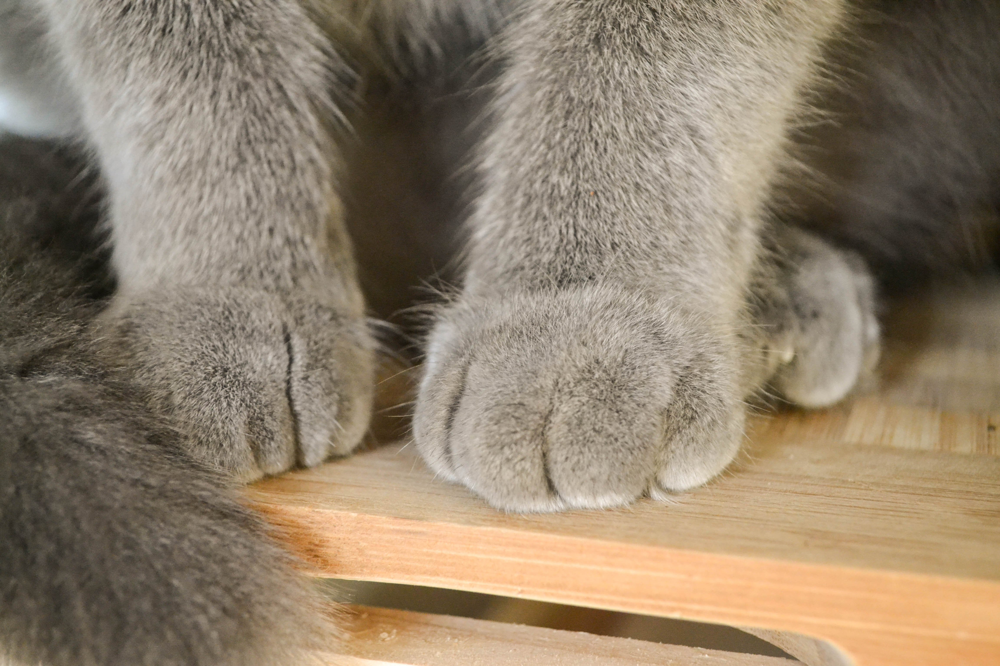

Kończyny przednie i tylne składają się na budowę kota w zakresie
aparatu
ruchu.
Warto wiedzieć, że przednie łapy nie są, jak u człowieka, połączone
trwale z
kręgosłupem, co pozwala zwierzęciu na duży zakres ruchu. Obojczyki u
kotów
są
szczątkowe, a przednie łapy mają ruchome łopatki, przez co kot
przeciska
się
przez wąskie przestrzenie. Z kolei tylne łapy są połączone z
kręgosłupem
aż
trzema kośćmi, czyli biodrową, łonową i kulszową.
Budowa kota w zakresie łap jest podobna. Każda łapa ma kości
nadgarstka,
kości
śródręcza oraz palców. Z paliczków wyrastają pazury, które u
kotowatych
są
schowane i wysuwane tylko w razie potrzeby. To jeden z mechanizmów
przystosowania tego drapieżnika, pozwalający mu na skradanie się w
każdych
warunkach.
